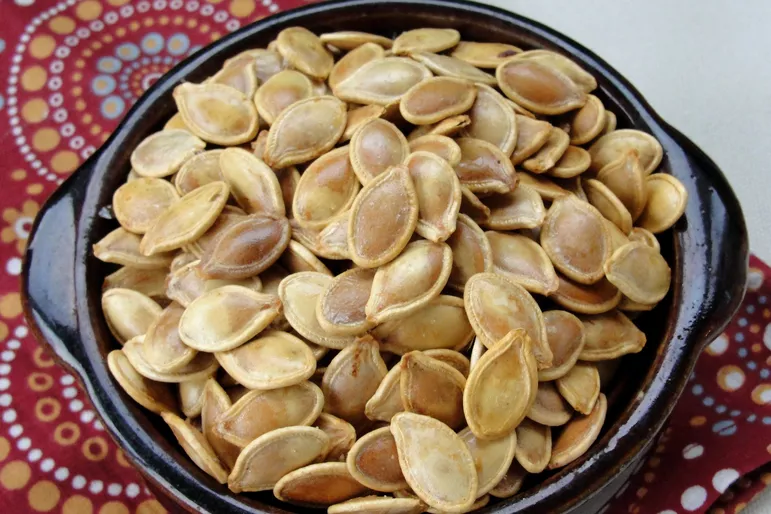

Pumpkin Seeds

Description
Here is a super easy recipe for roasting fresh pumpkin seeds that come out perfectly every time.
Ingredients
- 1 ½ cups raw whole pumpkin seeds
- 2 teaspoons butter, melted
- 1 pinch salt
Steps
- Preheat oven to 300 degrees F (150 degrees C) and gather ingredients.
- Toss seeds in a bowl with the melted butter and salt. Spread the seeds in a single layer on a baking sheet and bake for about 45 minutes or until golden brown; stir occasionally.
- Enjoy!